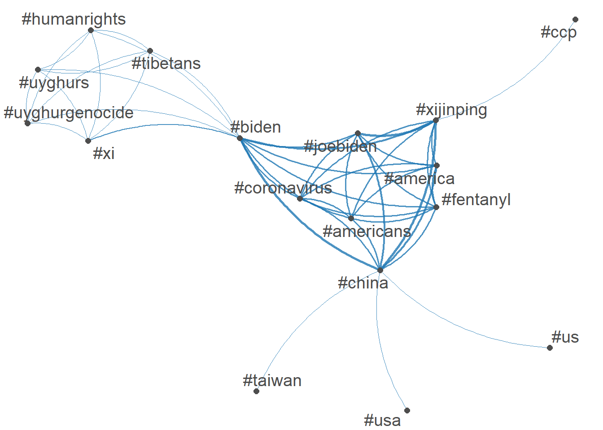
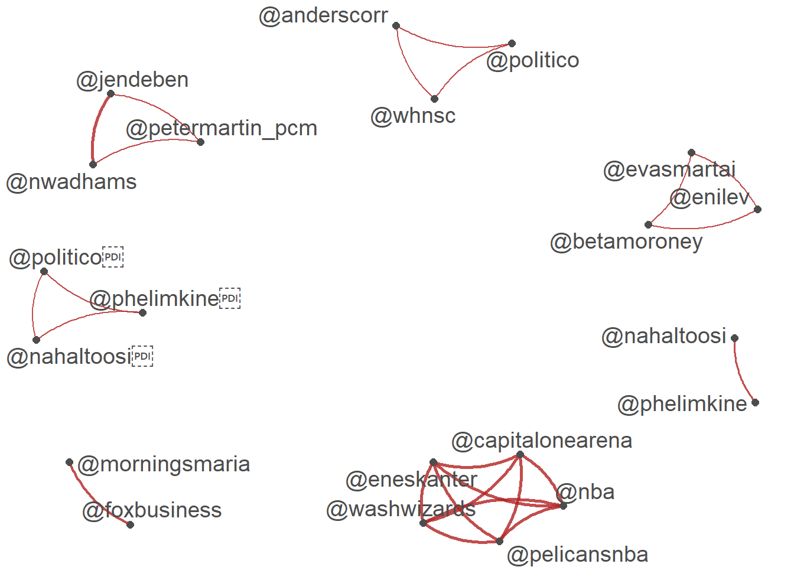

# Sample program for using quanteda for text modeling and analysis# Documentation: vignette("quickstart", package = "quanteda")# Website: https://quanteda.io/#install.packages(c("readr","quanteda", "quanteda.textmodels", "quanteda.textplots","quanteda.textstats","tidyverse"))library(quanteda)library(quanteda.textmodels)library(quanteda.textplots)library(readr)library(ggplot2)
Example with twitter data: A network plot is created using the “topgat_fcm” feature co-occurrence matrix
Code Here
# Twitter data about President Biden and Xi summit in Novemeber 2021# Do some background search/study on the eventsummit <-read_csv("https://raw.githubusercontent.com/datageneration/datamethods/master/textanalytics/summit_11162021.csv")#View(summit)#head(summit)# Extract text column from the dataset/dfsum_twt = summit$text#class(sum_twt) # check data type# Tokenize the texttoks =tokens(sum_twt)#class(toks)#creates a document-feature matrix (DFM) from the tokens stored in the "toks" variablesumtwtdfm <-dfm(toks)# Latent Semantic Analysis#textmodel_lsa is a function used to perform Latent Semantic Analysis (LSA) on a dfm sum_lsa <-textmodel_lsa(sumtwtdfm)#summary(sum_lsa)#tokenize the text in the "sum_twt" variable while removing punctuationtweet_dfm <-tokens(sum_twt, remove_punct =TRUE) %>%dfm() #pass the tokenized data to the dfm() function#head(tweet_dfm)#dfm_select is a function from the quanteda package used for subsetting a DFM based on a specified patterntag_dfm <-dfm_select(tweet_dfm, pattern ="#*") #only tokens that start with the '#' symbol#topfeatures is a function used to find the top N features (in this case, hashtags) in a DFM, based on their frequency.toptag <-names(topfeatures(tag_dfm, 50))#head(toptag, 10)# package generates various types of visualizations related to text data.library("quanteda.textplots")#fcm (feature co-occurrence matrix) is a function used to create a feature co-occurrence matrix from a DFM.tag_fcm <-fcm(tag_dfm)#head(tag_fcm)#selects features (hashtags) that match the patterns stored in the "toptag" variable topgat_fcm <-fcm_select(tag_fcm, pattern = toptag)#a network plot is created using the "topgat_fcm" feature co-occurrence matrixtextplot_network(topgat_fcm, min_freq =50, edge_alpha =0.8, edge_size =1)

A network plot of top 50 mentions
Code Here
#"tweet_dfm" DFM is filtered to include only tokens that start with the '@' symbol, typically representing user mentionsuser_dfm <-dfm_select(tweet_dfm, pattern ="@*")#find the top 50 most frequently occurring user mentionstopuser <-names(topfeatures(user_dfm, 50))#head(topuser, 20)#creates a feature co-occurrence matrixuser_fcm <-fcm(user_dfm)#head(user_fcm, 20)user_fcm <-fcm_select(user_fcm, pattern = topuser)textplot_network(user_fcm, min_freq =20, edge_color ="firebrick", edge_alpha =0.8, edge_size =1)

Example 2: Using presidential speeches
Code Here
# American Presidential speeches# Example extracted from https://quanteda.io/articles/pkgdown/examples/plotting.html#"quanteda.textstats" package, which contains functions and tools for text analysis and statistics using the Quanteda frameworklibrary(quanteda.textstats)#corpus containing texts of U.S. presidential inaugural addresses.data_corpus_inaugural_subset <-corpus_subset(data_corpus_inaugural, Year >1949) # create a subset kwic(tokens(data_corpus_inaugural_subset), pattern ="american") %>%textplot_xray()